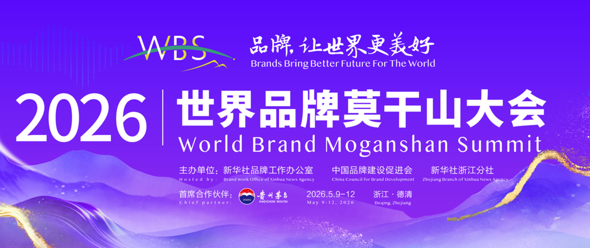

Project 01
2026 世界品牌莫干山大会
智海王潮传播集团｜现场执行实习生
项目封面

项目概览
项目时间
2026.05
我的身份
智海王潮传播集团｜现场执行实习生
项目地点
浙江 · 德清
项目简介
世界品牌莫干山大会是国内具有影响力的品牌传播与产业交流平台，汇聚政府机构、知名企业、专家学者及媒体代表，通过主论坛、专题论坛、品牌发布等多场活动，共同探讨品牌建设与高质量发展。
作为智海王潮项目组的一员，我全程参与大会现场执行工作，从会前筹备、流程彩排到活动落地，协助完成论坛运行、嘉宾接待及现场运营保障，在高密度、多团队协同的环境中积累了大型品牌活动的执行经验。
我的工作
会前筹备
活动开始前，参与论坛彩排及会场检查，核对席卡、导视、签到物料、嘉宾证件等执行细节，按照最新流程确认各功能区域布置，为大会顺利开场做好准备。
现场执行
活动期间驻守论坛现场，配合项目经理、导演组及会务团队完成嘉宾签到、入场引导、流程执行及现场巡查，根据活动进程及时同步流程变化，保障各环节有序推进。
多团队协同
与礼仪、安保、媒体、摄影及会务等多个工作组保持实时沟通，协助处理现场临时需求，完成物料补充、信息传递及会场切换等工作，确保不同岗位高效协作。
我的工作节奏
🌅 07:00｜会前准备
到达会场，检查论坛区域、签到处、席卡、桌签及导视系统，确认当天执行流程。
☕ 08:30｜嘉宾入场
配合礼仪及会务团队完成签到、嘉宾引导及现场秩序维护，保障嘉宾顺利入场。
🎤 09:00｜论坛进行
驻守指定岗位，根据导演组和项目经理安排同步流程变化，关注现场运行情况，及时协调执行细节。
📻 全天｜现场保障
保持与项目组及各岗位实时沟通，配合处理临时需求，完成信息传递、物料补充及会场巡查，确保论坛按计划推进。
🌙 活动结束｜复盘准备
协助完成撤场、物料整理及现场复盘，为第二天论坛做好准备。
项目亮点
多日执行
连续参与大会现场保障
多论坛
参与主论坛及专题论坛执行
跨团队
导演组、礼仪、媒体等协同工作
高强度
多场次活动流程保障与协调
我的收获
这是我第一次以活动执行团队成员的身份参与大型国家级品牌大会。从课堂上的活动策划，到真正站在活动现场，我更加深刻地理解了大型会议背后的运行逻辑：一场顺利的论坛不仅依赖于完善的策划，更需要现场执行团队对流程、时间节点和细节的精准把控。
在连续多天的项目执行中，我提升了现场统筹、跨团队沟通和快速应变能力，也进一步理解了大型品牌活动从筹备到落地的完整执行流程，更坚定了未来从事品牌传播、活动运营及会展行业的职业方向。